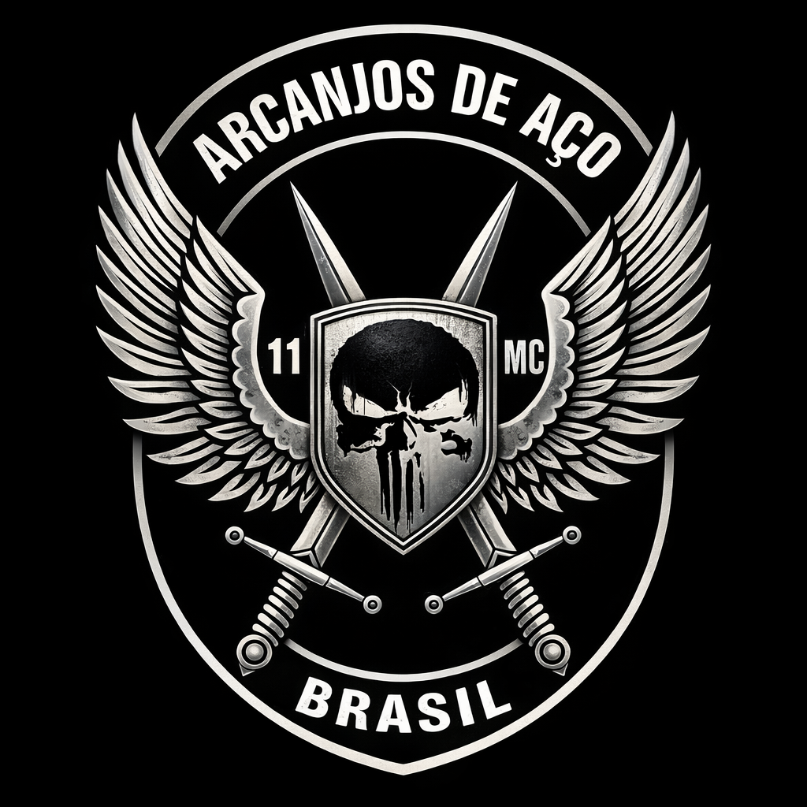
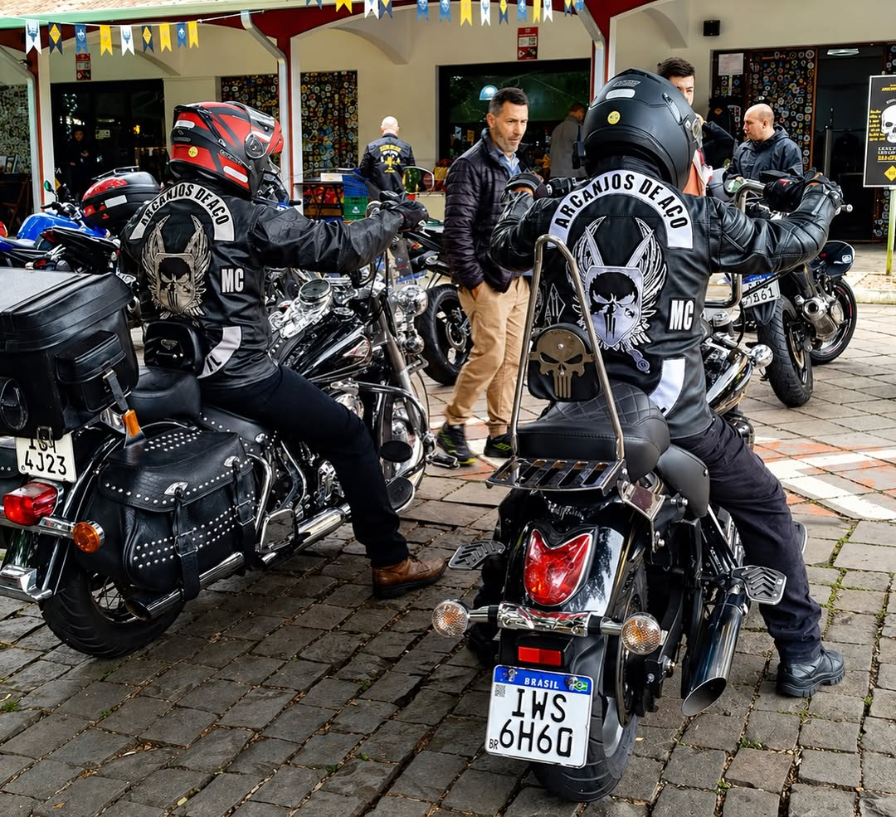

01
Respeito
Na sede, na rua, no rolê. Sem exceção. Quem veste o colete carrega o nome de todos.

A.A.M.C. · MMXVII
Nascido em Rio das Ostras (2017). Sede atual: MG.
Não é adrenalina. É a certeza de que o amanhã não está garantido — e o hoje, sim.

Na sede, na rua, no rolê. Sem exceção. Quem veste o colete carrega o nome de todos.
Irmão nunca anda sozinho. A estrada testa, a irmandade sustenta.
Chopper, clássica, personalizada. A máquina é extensão da identidade.
O destino é o caminho. Cada quilômetro conta a história da raça.
Nascido em Rio das Ostras (2017). Sede atual: MG.
Fundado em Rio das Ostras por Zé Alex e sua família, o Arcanjos de Aço nasceu como moto grupo com identidade própria — sem dissidência de outro MC. Com Bia ao lado na liderança, o clube abriu as portas e expandiu. Após desafios na estrada, Zé Alex passou a viver na Suíça; em 2025 começa um novo capítulo sob a presidência de Matheus Damasceno — sede atual em Minas Gerais.
Zé Alex e familiares fundam o Arcanjos de Aço como moto grupo em Rio das Ostras — RJ. Identidade própria desde o primeiro quilômetro.
De núcleo familiar à “família Arcanjos de Aço”: o grupo abre as portas a quem deseja integrar a irmandade.
Zé Alex e Bia consolidam o projeto e levam o nome do clube a novas frentes pelo Brasil.
Grave acidente afasta Zé Alex das atividades. O quadro e o ritmo na estrada diminuem — temporariamente.
Matheus Damasceno assume a presidência. Novo capítulo em Minas Gerais — MG, com os mesmos princípios de respeito e justiça.
Todas as motos têm lugar aqui — a máquina carrega o nome do clube na estrada.
Aparece na sede em Minas Gerais. Conhece os irmãos e conta quem é e qual a sua máquina.
Participa de um rolê com a irmandade. A estrada mostra o caráter.
Período de observação. Valores alinhados, colete conquistado.
Rolês, churrascões e encontros na estrada. Confirme presença na sede ou pelo Instagram.
Saída: Sede — MG
Rolê interno pela orla da Região dos Lagos. Parada no point dos irmãos em Búzios. Confirme presença até quarta-feira.
Confirmar presençaSede A.A.M.C. — MG
Encontro na base para quem quer conhecer a raça. Churrasco, música e conversa de estrada. Traga sua máquina.
Quero participarArraial do Cabo · Búzios · Cabo Frio
Três dias de estrada com pernoite. Roteiro fechado para irmãos e convidados. Detalhes e valores na sede.
Saiba maisSede — MG
Desde MMXVII. Celebração dos nove anos de estrada, irmandade e custom. Programação completa em breve.
Acompanhar no InstagramRio das Ostras e região
Campanha de arrecadação e entrega às famílias da comunidade. Toda ajuda conta — participe ou doe.
Quero ajudarFotos oficiais do pelotão — @arcanjos_de_aco
Datas sujeitas a alteração. Rolês internos são exclusivos para irmãos e convidados — consulte a sede.
"Desde que entrei, minha visão do motoclubismo mudou. Lealdade, estrada e respeito mútuo."
"A sede em Minas é nosso point. Churrascão, música e os melhores rolês da região."
"Encontrei família de verdade. Cada rolê é único. O respeito aqui não se compara."
Aparece na sede em Minas Gerais → participa de um rolê → período de observação → integração.
Sim. Moto própria, habilitação válida e presença ativa nos rolês.
Nascido em Rio das Ostras (2017). Sede atual: MG. Procure a irmandade no Instagram.
Arcanjos de Aço MC nasceu em Rio das Ostras (RJ) em 2017; sede atual em MG. Homônimos em RO, ES e MG são clubes diferentes.